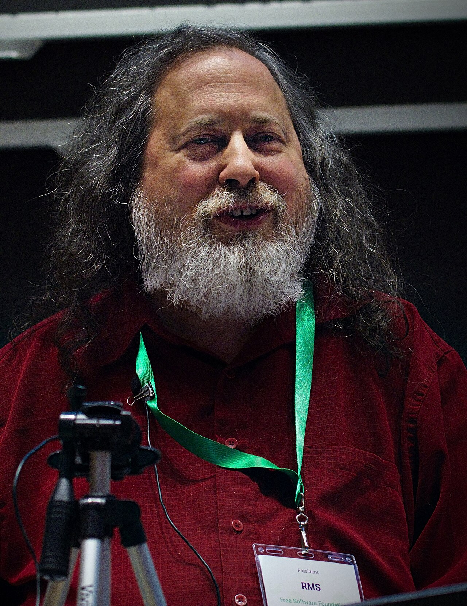

1969
Bell Labs · États-Unis

Ken Thompson & Dennis Ritchie
UNIX
login: ken
Leur idée ?
ls
liste
✓
grep
cherche
✓
sort
trie
✓
|
|
Un outil = une seule chose, bien faite. On les assemble avec le |
Tout est fichier
💽
un disque
/dev/sda
⌨️
un clavier
/dev/input/…
⚙️
un programme
/proc/1234
Unix conquiert les universités
AT&T ©
Propriétaire. Licence payante.
$
1969
Le projet GNU
« GNU's Not Unix »

Richard Stallman

Un Unix 100 % libre
liberté 0
Utiliser
liberté 1
Étudier
liberté 2
Modifier
liberté 3
Partager
GNU écrit presque tout…
gcc
le compilateur
bash
le shell
ls cp grep
les commandes
emacs
l'éditeur
?
LE NOYAU
1983
Helsinki · Finlande

Linus Torvalds
21
ans
ans
From: torvalds@klaava.Helsinki.FI
Subject: What would you like to see most in minix?
Hello everybody out there using minix -
I'm doing a (free) operating system (just a hobby, won't be big and professional like gnu) for 386(486) AT clones.
Subject: What would you like to see most in minix?
Hello everybody out there using minix -
I'm doing a (free) operating system (just a hobby, won't be big and professional like gnu) for 386(486) AT clones.
Spoiler :
il avait tort.
Linux est né !
outils GNU
+

noyau Linux
Des milliers de développeurs
Tux
Aujourd'hui, Linux fait tourner…
🤖
Android
smartphones, tablettes
☁️
Le cloud
serveurs, sites web
📡
Les box
internet, TV, objets
0 %
des 500 supercalculateurs les plus puissants du monde
Pas mal, pour un hobby.
$ carnet-linux
Module 00 · De Unix à Linux